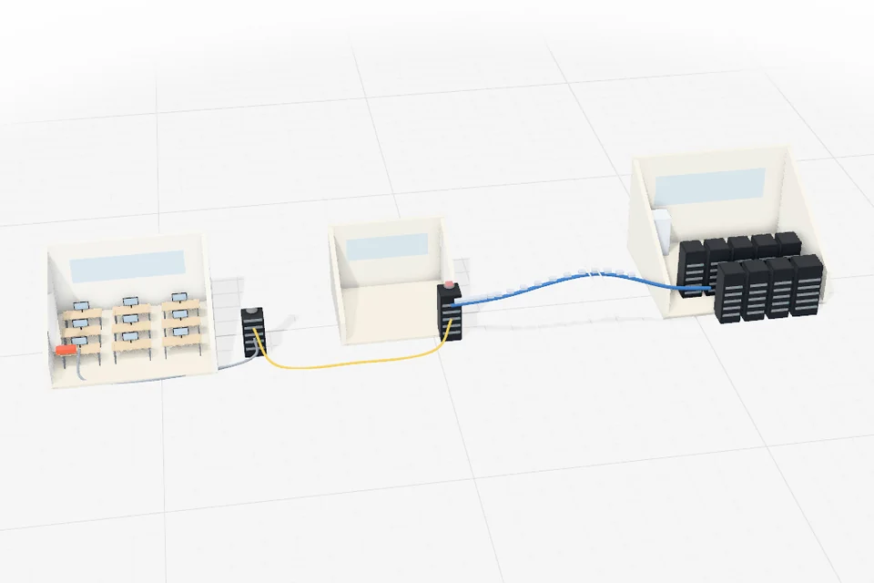

Độ trễ đầu cuối, mức sử dụng và thời gian đáp ứng
Tiết này đi theo một gói tin qua ba chặng mạng trường để tách độ trễ đầu cuối thành bốn thành phần, rồi nối độ trễ với mức sử dụng liên kết, điều kiện dư địa và thời gian đáp ứng mà người dùng cảm nhận.

Mở bài 3D: Gói tin qua ba chặngMục tiêu và chuẩn bị
Dùng cùng bài 3D Gói tin qua ba chặng; nút Lên lớp trong bài mở màn hình giảng viên với phút và việc từng bước.
Sau tiết học, sinh viên có thể
- Viết và giải thích biểu thức độ trễ đầu cuối (1.10) cho một đường đi nhiều chặng, gọi đúng tên và nguồn gốc của bốn thành phần.
- Tính trễ truyền theo (1.11) và trễ lan truyền theo khoảng cách cho số liệu cụ thể, chỉ ra thành phần nào giảm khi tăng tốc độ cổng.
- Tính mức sử dụng liên kết (1.7) và kiểm điều kiện quy hoạch Σb ≤ ηC (1.9).
- Giải thích vì sao trễ chờ tăng rất nhanh khi ρ tiến tới 1, dùng lời giải M/M/1 và đối chiếu với mô phỏng.
- Phân tích thời gian đáp ứng (1.12) để xác định nút thắt nằm ở mạng hay ở máy chủ.
- Nêu các điều kiện đo phải ghi kèm một kết quả độ trễ để kết quả lặp lại và so sánh được.
Kiến thức cần có
- Đơn vị bit, byte, bit/s; tiền tố k, M, G (1 byte = 8 bit).
- Chuyển mạch gói, khái niệm hàng đợi ở cổng ra của switch và router (học phần Mạng máy tính).
- Tiết 1: dịch vụ, QoS, SLA, metric hiệu năng, vector yêu cầu (1.6) và điều kiện nghiệm thu (1.8).
Chuẩn bị
- Máy tính có Chrome hoặc Edge bản mới, nối máy chiếu. Mở bài 3D trước giờ học một lần, bấm Lên lớp để màn hình giảng viên hiện phút và việc từng bước.
- In phiếu bài tập (một trang A4) cho mỗi sinh viên, hoặc chiếu phiếu và cho làm vào vở.
- Bảng và bút để giải ví dụ 1 đến 4; máy tính cầm tay để tính nhanh cùng lớp.
- Sinh viên: Đọc trước mục 1.5.2 và 1.6.1, giáo trình trang 13–14.
- Sinh viên: Máy tính cầm tay.
Diễn tiến 45 phút
Mỗi dòng là một bước trên màn chiếu, cùng tên và thứ tự với bài 3D. Phút là gợi ý; giảng viên chủ động co giãn.
Mở đầu
0–4 phútĐặt câu hỏi của tiết: một trang học liệu mở chậm, chậm ở đâu?
Độ trễ đầu cuối
4–20 phútXây biểu thức (1.10), tính từng thành phần với số liệu của cảnh.
Mức sử dụng và hàng đợi
20–31 phútĐịnh nghĩa ρ (1.7), quan sát trễ chờ tăng khi ρ → 1, đối chiếu mô phỏng với M/M/1.
Vận dụng
31–38 phútCâu 3 và câu 4 cuối chương: thành phần nào giảm khi tăng tốc độ cổng; mức sử dụng và dư địa.
Thời gian đáp ứng và đo
38–43 phútNối độ trễ mạng với thời gian người dùng chờ (1.12); điều kiện đo một kết quả độ trễ.
Tổng kết và kiểm tra nhanh
43–45 phútGhép mỗi thành phần với đòn bẩy thiết kế; 6 câu kiểm tra nhanh.
Ví dụ giải mẫu
Giải trên bảng trong tiết; số liệu đã kiểm bằng máy cùng công thức của bài 3D.
01Trễ truyền theo (1.11)
Tính trễ truyền của gói 1 500 byte trên liên kết 100 Mbit/s và 10 Gbit/s; của gói 64 byte trên 100 Mbit/s.
02Độ trễ một chiều của ba chặng theo (1.10)
Gói 1 500 byte đi ba chặng: (1) cáp đồng 60 m, 1 Gbit/s, ρ = 0,1; (2) cáp quang 2 km, 10 Gbit/s, ρ = 0,3; (3) WAN 300 km, 100 Mbit/s, ρ = 0,6. Lưu lượng nền gói trung bình 1 000 byte (mô hình M/M/1). Xử lý: 5 µs ở tủ truy nhập, 20 µs ở mỗi router (giả định). Tính độ trễ một chiều.
Chặng 2: dtx = 1,2 µs, dprop = 10 µs, dqueue ≈ 0,34 µs, dproc = 20 µs.
Chặng 3: dtx = 120 µs, dprop = 1 500 µs, μ = 108/8 000 = 12 500 gói/s, λ = 0,6μ = 7 500 gói/s, dqueue = ρ/(μ − λ) = 0,6/5 000 = 120 µs, dproc = 20 µs.
Tổng ≈ 1,81 ms, trong đó lan truyền trên WAN chiếm khoảng 83 %.
03Mức sử dụng và dư địa (câu 4 cuối chương)
Liên kết 1 Gbit/s mang thoại 80 Mbit/s, video 300 Mbit/s, dữ liệu nền 420 Mbit/s. Tính mức sử dụng và dư địa với η = 0,8.
04Trễ chờ khi tải tiến gần 1
Liên kết 100 Mbit/s, gói trung bình 1 000 byte, đến theo Poisson, cỡ gói phân bố mũ. Tính trễ chờ trung bình ở ρ = 0,5 và ρ = 0,9.
05Thời gian đáp ứng theo (1.12)
Dùng kết quả ví dụ 2 cho cả chiều đi và chiều về. Máy chủ xử lý 30 ms; sau đó máy chủ chậm lại còn 150 ms. Nâng WAN lên 1 Gbit/s có giúp người dùng không?
Phiếu bài tập
Một trang A4. Làm trên lớp phần đầu, phần còn lại về nhà.
Độ trễ đầu cuối, mức sử dụng và thời gian đáp ứng
Đáp án và gợi ý chấm
- 1
- D = Σe=1..3(dprop,e + dtx,e + dqueue,e + dproc,e). Tăng tốc độ cổng giảm dtx = L/C, và giảm dqueue gián tiếp vì ρ = Σb/C nhỏ lại. dprop = d/v chỉ phụ thuộc chiều dài và môi trường. dproc phụ thuộc thiết bị và chính sách. Cho đủ điểm khi nêu đúng cả bốn và lý do của dqueue.
- 2
- 64 byte = 512 bit: 51,2 µs trên 10 Mbit/s; 0,512 µs trên 1 Gbit/s. 1 500 byte = 12 000 bit: 1,2 ms trên 10 Mbit/s; 12 µs trên 1 Gbit/s.
- 3
- 2 km: 2 000/2·10⁸ = 10 µs. 1 600 km: 1,6·10⁶/2·10⁸ = 8 ms. Không: trễ lan truyền không phụ thuộc tốc độ cổng; chỉ rút ngắn được bằng đường đi ngắn hơn hoặc đặt dịch vụ gần người dùng.
- 4
- ρ = 800/1 000 = 0,8. Dư địa η·C − Σb = 0. Đạt tải trung bình nhưng chạm ngưỡng khai thác (1.9): không còn chỗ cho dao động, overhead, tái định tuyến, bùng nổ.
- 5
- μ = 12 500 gói/s. 60 Mbit/s: ρ = 0,6, λ = 7 500, Wq = 0,6/5 000 = 120 µs. 90 Mbit/s: ρ = 0,9, λ = 11 250, Wq = 0,9/1 250 = 720 µs. Tăng 6 lần.
- 6
- T = 4 + 150 + 20 + 10 = 184 ms. Mạng chỉ chiếm 4/184 ≈ 2,2 %: dù băng thông vô hạn, thời gian đáp ứng giảm không quá 2,2 % (thực tế còn ít hơn, vì trễ lan truyền không đổi).
Kiểm tra nhanh cuối tiết
6 câu, khoảng 3 phút. Mở đáp án sau khi lớp trả lời.
1. Thành phần nào của độ trễ chỉ phụ thuộc khoảng cách và môi trường truyền?
- Trễ truyền
- Trễ lan truyền
- Trễ chờ
- Trễ xử lý
Đáp án
B. dprop = d/v.2. Trễ truyền của gói 1 500 byte trên liên kết 1 Gbit/s là bao nhiêu?
- 1,2 µs
- 12 µs
- 120 µs
- 1,2 ms
Đáp án
B. 12 000 bit / 109 bit/s = 12 µs.3. Theo M/M/1, mức sử dụng tăng từ 0,5 lên 0,9 thì trễ chờ trung bình tăng khoảng bao nhiêu lần?
- 1,8 lần
- 4,5 lần
- 9 lần
- Không đổi
Đáp án
C. ρ/(1 − ρ) đi từ 1 lên 9.4. Liên kết 10 Gbit/s đang mang 7,5 Gbit/s, hệ số khai thác mục tiêu η = 0,8. Dư địa còn lại là bao nhiêu?
- 2,5 Gbit/s
- 0,5 Gbit/s
- 0 Gbit/s
- Đã vượt ngưỡng
Đáp án
B. η·C − Σb = 8 − 7,5 = 0,5 Gbit/s.5. Lệnh ping cho biết đại lượng nào?
- Độ trễ một chiều
- Thời gian khứ hồi
- Trễ truyền
- Mức sử dụng
Đáp án
B. Độ trễ một chiều (RFC 7679) cần đồng hồ hai đầu đồng bộ; ping đo thời gian khứ hồi.6. Máy chủ chiếm 90 % thời gian đáp ứng. Nâng gấp đôi băng thông mạng thì thời gian đáp ứng giảm nhiều nhất bao nhiêu?
- Một nửa
- Dưới 10 %
- Khoảng 45 %
- Không thể tính
Đáp án
B. Phần mạng chỉ là 10 %; dù mạng nhanh vô hạn, thời gian đáp ứng giảm không quá 10 % (1.12).Tóm tắt và nguồn
Ghi nhớ
- De2e = Σ(dprop + dtx + dqueue + dproc) trên mọi liên kết của đường đi (1.10).
- dtx = L/C (1.11) giảm khi tăng tốc độ cổng; dprop = d/v chỉ giảm khi rút ngắn đường đi.
- ρe = Σbf/Ce (1.7); trễ chờ tăng rất nhanh khi ρ → 1, nên quy hoạch theo Σb ≤ ηC (1.9).
- Thời gian đáp ứng (1.12) gồm cả máy chủ, cơ sở dữ liệu, máy khách: tìm thành phần lớn nhất trước khi nâng băng thông.
- Một kết quả độ trễ phải kèm điều kiện đo: điểm đo, kích thước gói, tải, thời gian, số lần lặp.
Nguồn
- Hoàng Trọng Minh, Giáo trình Thiết kế và hiệu năng mạng (học phần TEL1459), Học viện Công nghệ Bưu chính Viễn thông, 2026: mục 1.5.2, 1.6.1, trang 13–14; phương trình (1.7), (1.9)–(1.12); câu 3, câu 4 cuối chương 1.
- RFC 7679, A One-Way Delay Metric for IP Performance Metrics (IPPM), 2016.
- Kurose J. F., Ross K. W., Computer Networking: A Top-Down Approach, 8th ed., Pearson, 2021, mục 1.4: tốc độ lan truyền khoảng 2·10⁸ m/s trong cáp đồng và sợi quang.
- Jain R., The Art of Computer Systems Performance Analysis, Wiley, 1991, chương 31: lời giải hàng đợi M/M/1.
- Thời gian xử lý 5 µs, 20 µs, tải các chặng 1 và 2, cỡ gói nền 1 000 byte là giả định của bài, ghi cạnh số trên màn hình.